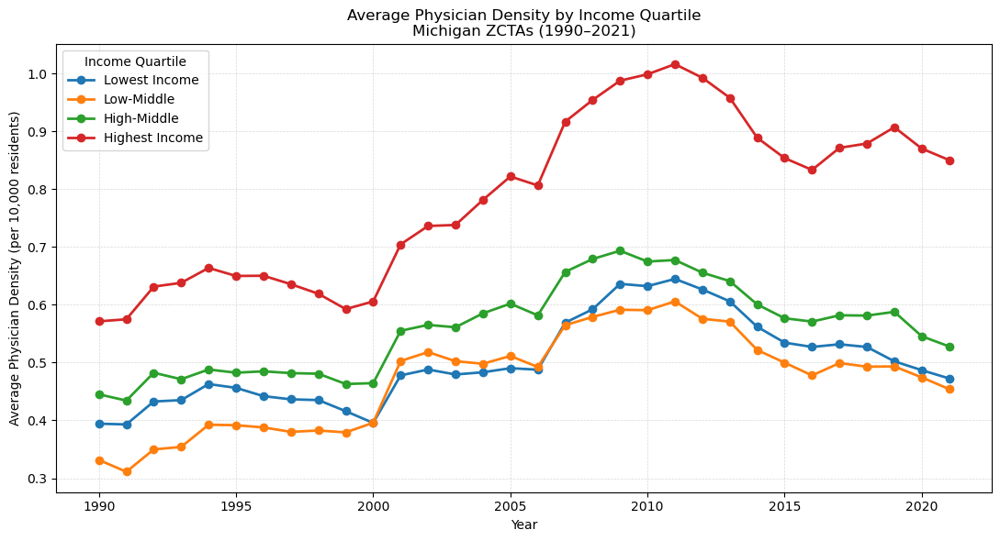

How has physician density changed across income groups from 1990 to 2021?
ZIP codes were grouped into four income quartiles using median family income from the NaNDA socioeconomic dataset. Average physician density was calculated for each quartile across every year from 1990 to 2021. Highest-income ZIP codes had consistently greater physician density throughout the entire period. All four groups rose together from around 2000 to 2011, then declined after 2011. Importantly, low-income ZIP codes actually had more physicians per capita in 2021 than in 1990 — the gap widened because high-income areas gained physicians faster, not because low-income areas lost them. A closer look at the spread between the top and bottom quartiles shows it doubled over the period, narrowing from 2013 to 2016 before widening again and peaking in 2019. One methodological note: averages are unweighted across ZCTAs, giving equal weight to a ZIP code with 500 residents and one with 50,000. A population-weighted version could tell a different story, particularly for the smallest and most rural ZCTAs.
